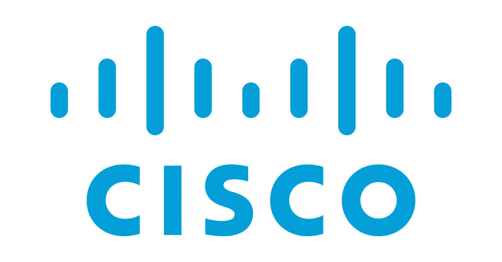
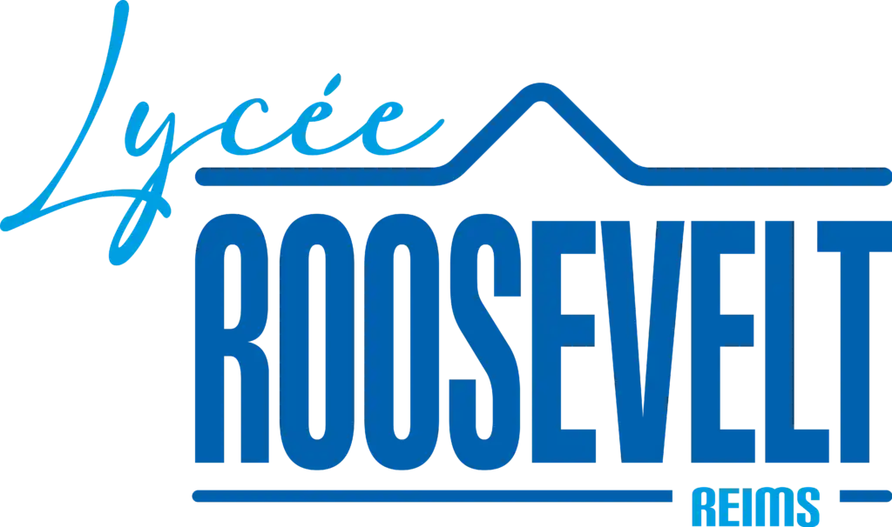
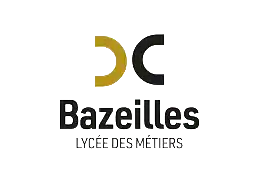

04
Réalisations
terrain
Projets Infra & Systèmes — 08

Développement Personnel — 01
Technicien Système et Réseau.
Reims · Lycée Franklin Roosevelt · 2024–2026
À la recherche d'une alternance en administration systèmes & réseaux.
Rythme école / entreprise · Administration systèmes & réseaux N1/N2 · Reims et environs
Rigueur technique d'un environnement hospitalier critique. Sens du service développé dans le luxe.
Étudiant en 2ème année de BTS SIO (option SISR), j'ai acquis une solide expérience terrain au CHU de Reims — gestion d'incidents, déploiement de postes, interventions sur l'infrastructure réseau (Cisco CLI, brassage, switchs). Mon passage dans l'hôtellerie 4★ m'a donné un sens aigu du service et de la relation avec les utilisateurs. Je maîtrise l'administration Linux Debian et la sécurisation des accès via des solutions de Bastion (Wallix). Mon objectif à terme : l'ingénierie systèmes.
Deux ans d'interventions en environnement critique hospitalier, et une première carrière dans l'hôtellerie de luxe.
Centre Hospitalier Universitaire (CHU) — Reims
2024 – 2026 · Reims, France
Best Western Premier Hôtel de la Paix ★★★★ — Reims
2021 – 2022 · Reims, France
Vandemoortel — Reims
2023 – 2024 · Reims, France
Des compétences renforcées sur le terrain hospitalier (CHU de Reims).

Analyse régulière des évolutions du secteur IT — enjeux environnementaux, menaces et nouvelles pratiques de sécurité.
Analyse de l'impact environnemental du numérique, pratiques d'éco-conception et bilan carbone des infrastructures IT.
Lire la veille →Étude des menaces volumétriques et protocolaires — typologies d'attaques, solutions de mitigation et bonnes pratiques.
Lire la veille →
Lycée Franklin Roosevelt, Reims

Lycée de Bazeilles
Lycée Franklin Roosevelt, Reims
Je cherche une alternance ou un stage en administration systèmes & réseaux. Contactez-moi pour discuter de nos futurs projets.